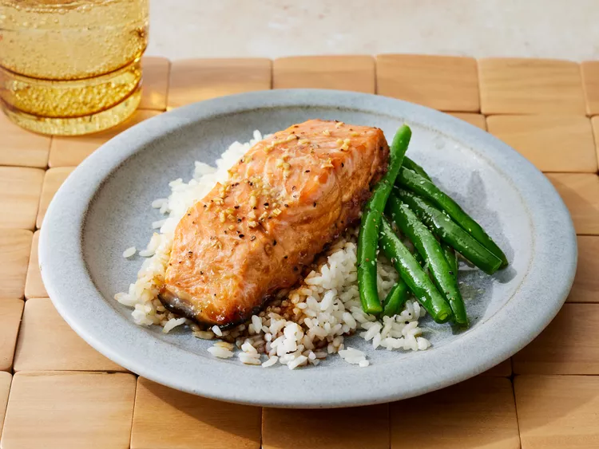

Home
Maple Salmon

This restaurant-worthy maple salmon recipe is as good as it gets!
Plus, it's easy to make with simple ingredients you probably already have
on hand. These are the basic ingredients you'll need to make
restaurant-worthy maple salmon at home:
Ingredients
- Maple syrup: ½ cup maple syrup.
- Soy sauce: 4 tablespoons soy sauce.
- Garlic: 2 clove garlic, minced.
- Seasoning: ½ teaspoon garlic salt.
- Seasonings:¼ teaspoon ground black pepper.
- Salmon:2 pounds salmon.
Serves 2 people
Directions
- Gather all ingredients.
-
Stir maple syrup, soy sauce, garlic, garlic salt, and pepper together in
a small bowl.
-
Cut salmon into 4 equal-sized fillets; place in a shallow glass baking
dish and coat with maple syrup mixture. Cover the dish and marinate
salmon in the refrigerator for 30 minutes, turning once halfway.
- Preheat the oven to 200 degrees C (400 degrees F).
-
Place the baking dish in the preheated oven and bake salmon uncovered
until flesh easily flakes with a fork, about 20 minutes.
- Enjoy!